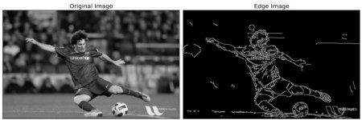
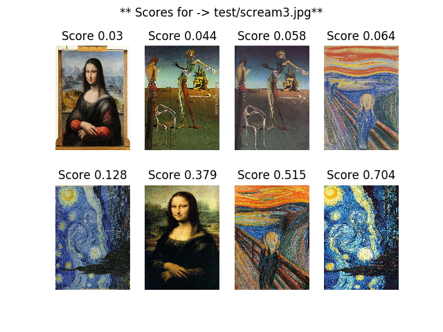
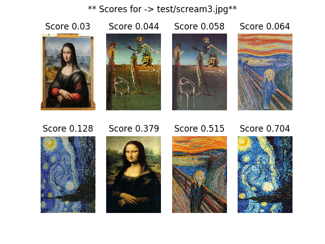
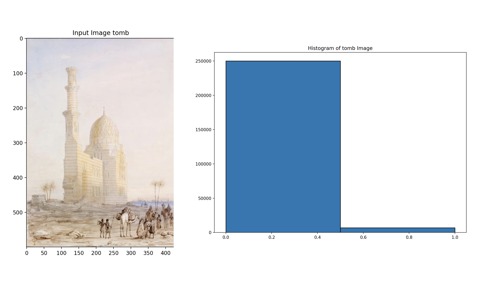
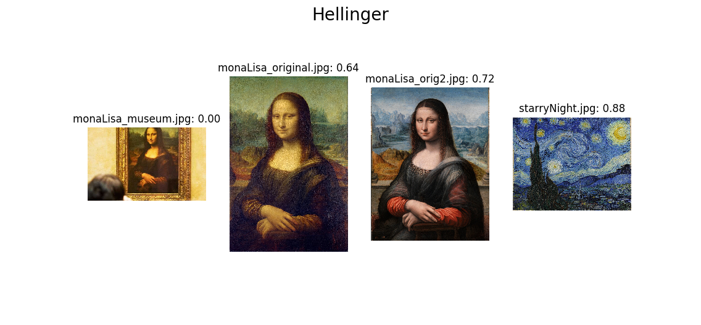

Painting Detector - Final Project Update
Akhila Ballari, Hemanth Bellala, Raghav Bhat, Carl Mubarak, Vivekanand Rajasekaraballari6, hbellala3, rbhat35, cmubarak3, vrajasekar6
Fall 2018 CS 4476 Computer Vision: Painting Detector
Georgia Tech
Abstract
The motivation for this project is to figure out the combination of different detection methods which best match an input image to its match within a database of paintings. The application will be used my museum-goers to look up and learn more about the paintings they liked during their museum visit. Initially, we implemented and tested several matching algorithms individually to test their accuracy on image matching. From there, we have combined the detection methods in order to maximize the number of query images that match their result image, while also considering query speed. Our final program achieves 100% query accuracy on our test set when querying against a diverse dataset, and does so in XXX seconds.
Teaser Figure
Our first image would be the input, and our ideal output would be the actual painting with artist name and painting description. Below is an example with the Mona Lisa.


Artist: Leonardo da Vinci
Description: 16th-century portrait painted in oil during the Renaissance in Florence, Italy. Many people think Mona Lisa's smile is mysterious. It is so often studied, recognized, and copied that it is the most famous painting.
Introduction
This project will demonstrate a system that uses computer vision techniques in order to help museum goers learn about the paintings they see. The system will work by having users take photos of—or with—the paintings they like or want to learn more about. Our system will then take as input these images and, using a variety of known-techniques, find the painting’s match if it exists in the database. The output of the system will be the original painting, as well as information detailing the painting—it’s creator and a description of painting. The authors of this paper believe that this will be a valuable and important tool, allowing museum visitors to focus on seeing art while they’re at the museum and learning more about their favorite pieces at home. In order to label these paintings well, we will analyze several different computer vision approaches, focusing on efficiency and accuracy.Approach
We have identified several approaches we will use to detect paintings—texture analysis, edge detection, color analysis, and feature detection. We shall first tune each of these different approaches to the images. Then, we shall use a combination of these approaches to find an efficient algorithm that labels as many paintings correctly as possible.Method 1 - Texture
We believe texture analysis will improve the overall result of our system since different paintings may have similar colors and features but may be of two different mediums. For example, oils paints are thicker than watercolor paints. Even though an oil painting of a city landscape contains the same features and colors as a watercolor painting of the same city landscape, the texture of the oil painting may be more rugged than the watercolor paintings.
We will use local binary patterns texture matching, a well-studied technique that is invariant to illumination as well as translation, the two primary ways our inputs will differ from our outputs. LBP matching works by forming an LBP descriptor, which is calculated by choosing n points on a circle of specified radius around a reference pixel and creating an n-bit number, where the ith bit is set to 1 if the ith value is greater than the reference pixel value, and 0 otherwise. This process is repeated for every pixel in the gray-scaled image, and thus the LBP descriptor is the same size as the original image. After the LBP descriptor has been created, a normalized histogram of the values is created. This process is repeated for every image in the training set.
In order to classify an image, the same process is repeated to create a normalized histogram of the LBP values. Then, a distance metric, such as chi-squared, is used to compare the test image histogram with the training data histograms. The most similar image—or the image with the lowest chi-squared error—is returned.

Method 2 - Edges
Edge detection will aid in narrowing down on the painting style or time period that the painting originated from. Paintings from different time periods vary in edge style. While modernist paintings incorporate more structured and prominent edges, paintings from eras such as Impressionism use softer and less prominent edges. We will utilize Canny Edge Detection to analyze these paintings as it aids in detecting a wide range of edges. The dataset we are using is categorized by time period, so we plan to preprocess a sample of paintings from each time period to determine the period’s edge characteristics. Then for each input image, we can use Canny Edge Detection to find the closest match. We will have to be careful with the threshold used in Canny Edge Detection, as we do not want to completely loose any soft edge information. The threshold will have to be low enough to be able to detect soft edges, so the intensity of each detected edge can help accurately identify edge characteristics and ultimately the time period that the painting could have originated from. We will utilize OpenCV for the Canny Edge Detection. While this approach will not guarantee an exact match for a given input image, it will aid in narrowing down on specific time period that the painting could have belonged to.

Image Credits
Method 3 - Color
Another approach that we will be looking at is analyzing the colors in the image to classify the paintings. A basic approach might entail simply summing up the pixel values for each of the R, G, and B channels and looking for images that have similar intensity values. A slightly more robust solution might entail a histogram of pixel color combinations and matching the input image with other pictures that have similar histograms of the pixel colors. However, a much more robust classification based on the colors of the images could be achieved using neural networks. If we train our classifier to remember the color values of the pixels given a set of images, then, based on an input image’s color values, we can predict which of the image this is coming from. We can use methods in scikit to implement the neural network, and certain methods in OpenCV to derive the color values of an image. View Source

Method 4 - Features
We plan to use feature matching as another part of our approach for scoring paintings to see which one is our target painting. Using this, we can easily track specific keypoints and descriptors between our sample photos and the target paintings. Features will be areas with the maximum variation when moved in all the regions around it. Using OpenCV's feature matching, we used a Fast Library for Approximate Nearest Neighbors (FLANN) based matcher to analyze the descriptors from the 2 images and match them up. Next, we filtered the matches so to eliminate outliers. Using the remaining matches, we could identify the features that matched between the two images.

Experiments and results
Method 1 - TextureThe implementation for this experiment was based on Bikramjot Hanzra’s Texture Matching using Local Binary Patterns tutorial. The implementation uses several packages, including OpenCV and the local_binary_pattern algorithm in the skimage.feature package. The training dataset used was a collection of four famous paintings, all of which seem to have different textures. Two copies of each image were used in the training dataset in order to test this method’s sensitivity to angle, color intensity, and image size. As a pre-processing step, the images were rescaled to have the same number of pixels and dimensions.
The only user-defined parameter in the LBP algorithm is the radius of the circular patch. Since the purpose of this approach is to detect the fine-grained differences such as the medium of the painting—as opposed to coarser details like how thick lines tend to be in the painting—we iterated over several small values for radius ranging from 3 to 20 pixels. However, no radius value (including much larger ones) seemed to improve or drastically change the results of this technique.
As described in the approach section, in order to classify an input, we calculate its LBP descriptor and then use a distance metric—in this case, chi-squared—to compare the LBP descriptor against the training set. Our experiment returned the chi-squared error as well as the corresponding image. Below are examples of the results.
Query Image (left), Results w/chi-squared error (right). LBP radius = 15.
Query Image (left), Results w/chi-squared error (right). LBP radius = 3.
The subsample of results above clearly show that this method did not work very well, regardless of the query image and the radius used. We believe that the algorithm is doing no better than guessing. For example, in the trial below with radius = 3, we see that one version of The Scream has a chi-squared error of 0.064 while the other has an error of 0.515 from our query image.
Query Image (left), Results w/chi-squared error (right). LBP radius = 3.


Method 2 - Edges
In order to test the accurancy of finding matches to an input image of a painting based on the edge structure of the image, we used a small sample of the images in the Wiki database. The sample of 9 images belong to different art styles, so they vary in edge quantity and structure. Some of the images in the sample set have very faint and soft edges, while others have more rigid and prominent egdes.
We proprocessed each image in the sample set by running the Canny Edge Detector on it with the most appropriate sigma for the Guassian Filter, and plotting an histogram of the values returned by the edge detector. Since skimage's canny edge detector uses white pixels to denote an edge on a black background, the histogram produced will only require 2 bins. The ratio of the number of white pixel to the the number of pixels in the entire gray image would provide a good guage on the promience of edges in each image. So, we determined and stored the white pixel ratio for each image. The image below shows the histogram for the given image. As we can see the tomb image doesn't have too many promienent edges, so the first bin with a pixel value of 0 (black pixels) has a higher frequency, than the second bin with a pixel value of 1 (white pixels).

For any input image and a specified sigma, for which we want to find a match, we processed the image in the same way. We ran skimage's canny edge detecor on the input image, and determined the white pixel ratio by plotting a histogram of the returned edges array. The sigma for an input image is a free parameter that determines the accuracy of the results. We determined the matches to the input image by finding all the images in the sample set that have a white pixel ratio that has a percent difference respective to the input image's white pixel ratio that is less than the specified threshold. For the experiment, this threshold was set to 10%. (Percent difference of the ratio of each image in the same and the ratio of the imput imgae should be less than 10% for the individual image to be considered a match.)
This approach seems to work really well in distinguishing images with softer and less prominent edges from images with bolder edges. With an appropriate sigma, we were able to narrow down the set to the input image if the input image contained soft edges. The image on the left is the result of finding a match of the 'tomb' image with a sigma of 1.7. (The original image was preprocessed with a sigma of 1.8). As we can see from the image on the right, this approach also works really well with the 'john-ferren' image with a sigma of 0.55. (The original image was preprocessed with a sigma of 0.5).
The value of these sigmas for the softer edges images drastically affected the results of the detector based on edges since blurring the image too much or too less could either take out too much of the important edges or introduce too much noise. For example, running the detector on the 'tomb' image with a sigma of 1.5 does not produce any matches at all. Using only edges as the macthing factor in the detector does not work as well in distinguishing amongst images with very promienent and rigid edegs. As we can see from the images below, while we were able to get the right image back within the matches, we also get matches with other non-related images. The first image on the left shows the results for running the detector on the 'abstract' image with a sigma of 1.5 (preprocessed with a sigma of 2), and the second image on the right shows the results for running the detector on the 'synchromy-in-orange' image with a sigma of 1.2 (preprocessed with a sigma of 1.3).
Method 3 - Color
Dataset
For the midterm update, the color has only been updated on a smaller subset of the full dataset. We are testing it with these 4 images for now to analyze the results closely before we move to the full dataset. The first image serves as the query.


Histogram Differences
- In this approach, we first generate a histogram for each of the images in our dataset. We are using 8 bins for each of the RGB channels and allocate each pixel to three bins.
- Given a query image, we generate a histogram for this image
- We compare the two histograms using these 5 methodologies:
- Correlation
- Chi-Squared Distance
- Intersection
- Bhattacharyya Distance
- Hellinger Distance
- We can then analyse the different scores of the system for each of the methodologies.
Museum
Original
Gradient Match
Dissimilar
| Image | Correlation | Chi-Squared | Intersection | Bhattacharyya | Hellinger |
|---|---|---|---|---|---|
| Query | 1.00 | 0.00 | 4.17 | 1.00 | 1.00 |
| Original | .28 | -532.78 | 1.50 | 0.36 | 0.36 |
| Similar Gradients | .22 | -57.97 | 1.02 | 0.28 | 0.28 |
| Starkly Different | .06 | -80.90 | 0.41 | 0.12 | 0.12 |
As we can see here, the query performs best with all histogram comparison methods. This makes sense intuitively since the histograms produced should be the same, since the pictures are the same.
Correlation seems to do pretty well since there is a significant difference between the Mona Lisa paintings and the Starry Nights. However, my issue with this method is that .30 correlation is not high enough.
Chi-Squared is producing a result quite on the contrary to what we expect and desire. The most favoriable outcome is actually the painting in a different color context than the original. And the starkly different painting is favored over the original painting present in the museum picture.
Intersection seems to provide the most meaningful and useful results. It seems as though we can produce scores over 1 when the images are relatively close and below when there is very little in common.
Bhattacharyya and Hellinger are actually the same formula (as implemented in opencv), and they produce results very similar to those from correlation. Due to the low scores for high matches, we must discard these results as well.
Qualitative Results for Color

Method 4 - Features
For the feature matching imeplementation, we used OpenCV's feature matching tools. First, we used SIFT to detect all the keypoints and their descriptors, and then used k-nearest neighbors to pair features from the photo of the painting to features of the set of available paintings that it could be. For this update, we used a subset of 5 paintings. Below are the results for identifying both the Mona Lisa and the Van Gough Self Portrait from 1889.

As we can see from the results above, there are many more matches found between the photo of the Mona Lisa and the actual painting itself. The actual numbers show that there are 34 matches with the Mona Lisa, and only 4, 2, 1, and 2 for the following 4 images respectively.
Intersection seems to produce the highest results. Next parameters that we can tune are the bin size. We also need to run this with a larger data set to determine what a high enough intersection score will determine similarity and what score indicates a clear distinction between two paintings.
Conclusion and Future Work
Ultimately, this method was not able to yield consistent or impressive results. This makes sense given the very nature of paintings: most don’t have any sort of fine-grained, repeatable pattern in them, which is what texture detection depends on finding. Due to these results, we have decided that a texture-based classification approach is not feasible for this classification problem and is thus no longer being considered.
Finding matches utilizing edges does help narrow down on a set of images. This approach works the best when distinguishing images with soft edges with images with hard edges. However, it cannot be solely used for distinguish amongst images with similar hard edges. The free parameter sigma is used to control how much to blur an input image and significantly affects the the accuracy at which the images with soft edges are detected. Since this is an easier parameter to control than the threshold values for maximum supression, we decided to use skimage's canny edge detector instead of OpenCV's canny edge detector. This approach processed the small sample set and found matches relatively fast. We will have to test the performance of this approach on a significantly larger data set of images with a greater variety of edges. We will also explore if we can get more information other than the white pixel to total pixel ratio from the canny edge detector. Finding matches though edge analysis is definitely impactfull and will be a significant componenent of the final painting detector.
We have only run one of the three color algorithms that was proposed. We still need to try the k-means clustering algorithm as a way of determining whether 2 paintings map to the same clusters or not. We also still need to implement the method of using neural nets to remember the color compositions of various paintings and their artists. We also need to expand the dataset size from 4 images to the full data set of 1000s of images. We need to check whether or not the intersection is optimal in that case as well. Although this will take significant amounts of time to run, the results should reveal the effectiveness of color as a means of classifying paintings. This will also allow our Neural net to be effective. As far as the parameters are concerned, we still need to figure out what the best bin-size is that optimizes the scores generated.
From feature matching, we can conclude that it is in itself a valuable tool for matching the photos to paintings. In both experiments, the correct painting had a significantly larger number of matches than the other paintings. We beleive, as of now, that feature matching will be very valuable in the remainder of this project.
References
“How-To: 3 Ways to Compare Histograms Using OpenCV and Python.” PyImageSearch, 2 Aug. 2018, www.pyimagesearch.com/2014/07/14/3-ways-compare-histograms-using-opencv-python/Texture Matching Using Local Binary Patterns (lbp), Opencv, Scikit-learn and Python http://hanzratech.in/2015/05/30/local-binary-patterns.html
Check out our Proposal, Updates, and Results!
Project ProposalProject Update 1